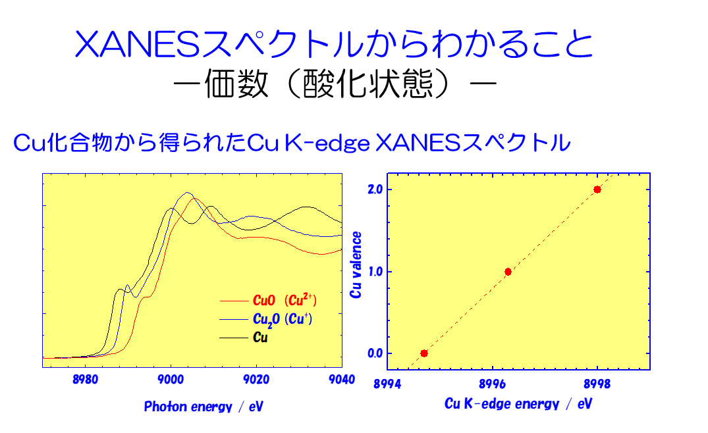

銅（Cu）の価数を調べる
Cu、Cu₂O、CuOのCu K吸収端XANESを比較した価数評価の測定事例。

測定結果から分かること
金属銅、酸化銅(I)、酸化銅(II)のスペクトルを比較すると、 吸収端エネルギーやスペクトル形状に違いが見られます。
価数が既知の標準試料との比較により、未知試料中のCuの化学状態を 評価することができます。
他の元素への応用と注意点
Fe、Ni、Coなどにも同様の考え方を適用できます。ただし、吸収端位置は 配位環境や化学結合状態にも依存するため、価数を一意に決められるとは限りません。